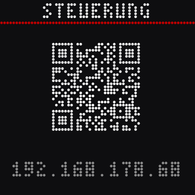

Verbindung verlorenZeigt die Seite „Verbindung verloren“ oder steht die Zeit, erreicht das Handy das System nicht. Prüfe, ob das Handy im selben WLAN ist wie die Einheiten. Das Spiel auf den Anzeigen läuft weiter.
Eine Einheit verliert den StromDas Spiel läuft auf der anderen Einheit weiter, sie wird nach etwa 23 Sekunden Master. Ein pausiertes Spiel bleibt erhalten, der QR-Code deckt es aber ab, bis ein Handy verbunden ist: einmal scannen, der Code gehört zu dieser Einheit.
Eine Einheit zeigt nach einem Update ihren eigenen QR-CodeSie hat eine andere Hauptversion und schließt sich den anderen nicht mehr an. Aktualisiere die anderen Einheiten auch, eine nach der anderen, in ihren Einstellungen.

TonDie Einheiten haben keinen Lautsprecher, das Signal kommt vom Handy. Koppele einen Bluetooth-Lautsprecher, schalte den Ton ein und tippe nach dem Laden einmal auf die Seite. Lass die Seite im Vordergrund und stelle die Bildschirmsperre vor dem Spiel auf die längste Zeit oder aus: Ein gesperrtes Handy bleibt stumm.
Der QR-Code lässt sich nicht scannenDer LED-Abstand macht ihn für manche Kameras aus der Nähe schwer lesbar. Halte das Handy ein bis drei Meter entfernt oder tippe die Adresse unter dem Code ein und gib den Code ein.
Wer bedienen darfAlle im selben WLAN können zusehen, bedienen dürfen nur gekoppelte Handys. Die Kopplung hält Umstehende von den Tasten fern; sie schützt nicht vor jemandem, der den Netzverkehr mitlesen kann: Nimm ein Netz, dem du vertraust, oder einen eigenen Hotspot.